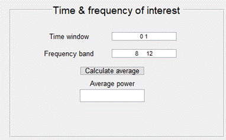

Time-Frequency Analysis
Contents
Parameter
settings of the Fourier transform
Average
over trials / subjects
General
This tool generates a time-frequency representation of
EEG time series data with the choice of several baseline correction methods,
and the option to calculate the average power within a given time-window and
frequency range of interest. All data manipulations carried out using this tool
are saved in the history of the data struct.
The individual plots can be exported as figures or
data.
Input
The input should be an EEG
MATLAB structure, containing data from one of these two domains:
time EEG time series (EEG
recording representing Voltage over time);
tf A
previously calculated Time-Frequency (TF) representation.
The data in
the struct should have the following dimensions (check this in the struct under
dims):
1st dimension is samples
(time) for time series or frequency for TF data;
2nd dimension is channels
for time series or time for TF data;
Optional: 3rd dimension
can be either trials, subjects or conditions.
The filename and dimensions of the data appear in the
upper left of the tool.
Functions
Time-frequency
analysis
This function
calculates a time-frequency representation of the time series data. This is
done by running a short-time Fourier transform on the data with a sliding
Hamming window.
Parameter settings of the Fourier transform
The exact settings of the Fourier transform used are
hard-coded, so they cannot be adjusted from the interface.
Below is an overview of these settings which are also printed to the Matlab
command window when running the analysis.
Window length = number of samples per
second (i.e., sample frequency: Fs)
Window shape = Hamming window
NFFT = Fs*4
Overlapping number of samples of
running window is dependent on the length of the data to be analyzed. An
example of the exact window step sizes for Fs = 256 can be found in the table
below:
|
Length of data |
Window length |
Step size |
Overlap |
Illustration |
|
< 5 seconds |
500 samples |
1 sample |
499
samples |
|
|
5 30 seconds |
500 samples |
125
samples |
375
samples |
|
|
> 30 seconds |
500
samples |
250
samples |
250
samples |
The returned power values are expressed in 10log(V^2).
Baseline correction methods
None
No baseline correction is applied and the function plots the power spectral density
(PSD) estimates. These PSD are expressed in 10Log(V2).
Note: since the recorder EEG signal is in the order of microvolts (=1e-6
Volt) the resulting raw power values are in the range of -12 (=10Log(1e-6*2))
Power / baseline
This method calculates the power relative to the baseline period per frequency.
First the average baseline power is calculated by averaging the power over the
baseline period (see Baseline sample(s)) per frequency. Then the power
of each time point is divided by the average baseline power (again per
frequency).
The resulting values lie around 1, where values greater than 1 represent a
relative increase in power, and values less than 1 represent a decrease in
power.
Note: this method is most useful to show changes over time within a frequency
band of interest.
Normalized power
This method calculates the normalized power by dividing the power of each
frequency by the average power over all frequencies. This is done per time
point.
The resulting values lie between 0 and 1 and represent the relative
contribution of each frequency to the total power.
Note 1: This method is most useful to show which frequencies are most present
at each time point. This method is also used to reduce between subject, or
between session differences which may result from differences in conductivity
(caused by differences in skull thickness, amount of gel applied etc.).
Note2: This method does not work well with data which has been band-pass
filtered. Preferably use a notch filter, possibly in combination with a
high-pass filter.
Baseline sample(s)
There are
three different input options:
1.
When no input is provided all samples
of the trial are used as baseline samples.
2.
When one sample number is provided,
the first x number of samples are used as baseline. Example: Baseline
sample(s) = [128], sample 1-128 are used
as baseline.
3.
When two sample numbers are provided
these are taken as the first and last sample numbers of the baseline window.
Example: Baseline sample(s) = [256 768],
samples 256-768 are used as baseline.
Average over
trials / subjects
This averages
the time-frequency data over all trials or subjects. When analyzing multiple
channels, first run the time-frequency analysis, then average over
trials/subjects and then save the resulting averaged TF data before moving to
the next channel to repeat these steps.
Calculate
average
This function
averages over all time points and frequencies within a given time window and
frequency band of interest, resulting in a single averaged power value. This
value of each participant and/or condition can be used for statistical
analysis.
The chosen time-window and frequency band is visualized in the top-left figure
by a dotted black line. The power of all frequencies during this time-window is
plotted in the Power spectrum;
top-right figure. The Power over
time of the chosen frequency band is plotted in the bottom-left figure.
Time window of interest: provide the
start and end of the time window of interest in seconds, relative to the Onset sample which is t=0.
Frequency band of interest: provide
the lower and upper limits of the frequency band of interest in Hz.

Output
Data
Time-frequency
This function calculates the time-frequency
representation of time series data and plots the results in in the upper left
graph.
The dimensions of the resulting time-frequency dataset
appear next to the dimensions of the original time series dataset. These
dimensions respectively represent 1) frequency, 2) time and 3)
trial/subject/condition. When the average
over trials/subjects has been calculated the size of the third dimension
will be reduced to 1, representing the average over those trials/subjects.
Note that the resulting data will have less sample
points than the original data. This is because the time frequency analysis uses
sliding windows where the beginning and end of the data are discarded and
depending on the window step size,
the time resolution might also be reduced.
The resulting data can be saved using the Save button.
The new (TF) data will be stored in an updated struct,
meaning that all elements of the struct will be updated to match the new TF
data. A window will pop up where you can select the location to store the
file and change the file name.
Power Spectrum
This data is generated when the average power is calculated and
is used to plot the power spectrum. The data can be saved by clicking the
Export Data button next to the power spectrum. The new data will be stored in
an updated struct, meaning that all elements of the struct will be updated to
match the data from the power spectrum. A window will pop up where you can
select the location to store the file and change the file name.
The saved data contains the power values for the
frequencies plotted in the figure, so the output depends on the frequency range chosen under
Plot settings.
Power over time
This data is
generated when the average power
is calculated and is used to plot the power over time. The data can be saved by
clicking the Export Data button next to the figure. The new data will be
stored in an updated struct, meaning that all elements of the struct will be
updated to match the data from the power over time. A window will pop up where
you can select the location to store the file and change the file name.
The saved
data contains the power values for the time points plotted in the figure, so
the output depends on the time
window chosen under Plot settings.
Figures
The primary
time-frequency analysis results in a time-frequency representation (TFR) which
is plotted in the top-left figure.
When the
average power within the time and frequency of interest are calculated two
additional plots are made:
1.
The power spectrum which shows the
power of all frequencies within the time of interest
2.
The power over time of the frequency
band of interest.

Time-frequency representation
This figure shows the power values (color;
z-axis) per frequency (y-axis) and per time point (x-axis).
The time axis is expressed in seconds and the frequencies in Hz. The units of
the power values depend on the baseline
correction method.
The highest power values are colored red, the lowest power values are blue, and
the average power values are green.
Plot
settings
The resulting
time-frequency representation can be adjusted by using the following settings.
These settings do not affect the analysis itself.
Channel
Select the
(EEG) channel to analyze. The time-frequency analysis is done per channel
because it can be computationally heavy. Once another channel is selected the
(baseline-corrected) time-frequency data of the previous channel is gone. If
you want to analyze multiple channels, apply to analysis to one channel, save
the desired output and continue to the next channel.
Trial
/ subject
Select the
trial or subject number to plot in the main figure. The time-frequency analysis
is run on all trials or subjects at the same time, this setting only selects a
trial or subject to plot.
Onset sample
Provide the
sample number at which the event of interest starts (showing an image, playing
audio, subject response, mental imagery). The time axis (x-axis) will be set to
t=0 at this point and all other samples will be referenced to this point, so
earlier samples will have negative timestamps, and later samples will have
positive timestamps. This setting does not affect the results of the
time-frequency analysis, but it does affect how the average power is calculated
for the time and frequency of interest.
Note: The
onset sample does influence the behavior of the calculated average power within
the time-window of interest because the time-window is provided in seconds
relevant to event onset.
Axes
limits
The plot
limits of all three axes (time, frequency and power) can be adjusted by
providing respectively the time range, frequency range and color range.
Time range: provide lower and upper
limits a time window in seconds relative to the event onset defined by the Onset sample, so the lower limit
should be negative when you want to show baseline activity before onset.
Set to 0 in order to show the complete time-window.
Frequency range: provide the lower
and upper limits if the frequency range to plot.
Color range: provide two numbers
which determine the color coding of the power values. The highest power values
are presented as red, the lowest values are presented as blue. This can be useful in cases where there are
relatively extreme power values due to artifacts or the presence of strong
oscillations in usually lower frequencies which are not of interest. These
extreme values can obscure the effect of interest when for example only one
frequency or time-point is red, and the rest is all blue. Decreasing the upper
limit then makes that that upper limit value (and everything with higher
values) red. The exact values to use strongly depend on the data and baseline
correction method.
Power spectrum
The power spectrum is plotted after the average
power is calculated for the time and frequency of interest. The power spectrum
shows the power of each frequency, averaged over the time points within the
time window of interest.
The x-axis represents the frequencies in Hz, the y-axis represents the power of
which the unit depends on the baseline
correction method.
The dotted lines indicate the frequency band of interest over which the average
is calculated for the output value.
Power over time
The power
over time is plotted after
the average power is calculated for the time and frequency of interest. This
figure shows how the power of the frequency band of interest changes over time.
The x-axis represents time in seconds, the y-axis represents the power of which
the unit depends on the baseline
correction method.
The dotted lines indicate the time window of interest over which the average is
calculated for the output value.